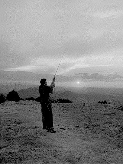

Sobre la
autora
Las obras de Claire Williams adoptan la forma de antenas tejidas, esculturas de vidrio rellenas de plasma y dispositivos que capturan lo invisible. Los datos de radiotelescopios se materializan en puntadas tejidas, vibraciones sonoras o pulsos de luz. Crea esculturas electrónicas para hacer visibles los movimientos electromagnéticos que abarcan desde el cosmos hasta nuestra magnetosfera, las ondas de radio que atraviesan nuestro entorno terrestre y las que emanan de nuestros cuerpos y actividades psíquicas.
Williams reside en Bruselas, Bélgica. Tiene un Máster en Diseño Textil por la ENSAV La Cambre y el Estudio Nacional de Arte Contemporáneo de Fresnoy. Expone internacionalmente y es profesora en escuelas de arte. Su trabajo ha sido expuesto en festivales de artes digitales y artes sonoras y exposiciones colectivas como Bozar (Be), Le Fresnoy (FR), etc. Así como exposiciones individuales en Le Vecteur (BE), la Manufacture (FR) y el Centro Cultural Puerta de Castilla (ES)

Sobre Data Knits
La serie de investigaciones de Claire Williams explora cómo un textil puede transformarse en un medio para almacenar y memorizar datos, convirtiéndose en un soporte físico de información. Estas obras reflejan también su interés por las prácticas etnomatemáticas presentes en textiles tribales y tradicionales, donde el conocimiento y las estructuras matemáticas se tejen de manera intuitiva, transmitiendo saberes ancestrales a través de los tejidos.
Para ello, Williams utiliza máquinas de tejer eléctricas hackeadas de los años 90, adaptadas para ser controladas directamente desde un computador. Esta experimentación, que ha enseñado a mediante workshops con Maurin Donneaud en “All About Knitting and Hacked Machines”, se basa en reprogramar máquinas comerciales (como las Brother KH910 o KH940) para convertirlas en una especie de impresora textil. Así, la comunicación directa entre herramientas digitales y técnicas de tejido permite traspasar los límites del patrón tradicional, transformando datos o sonidos en estructuras visuales y táctiles.
Este proceso de traducción entre lo sensible y lo material revela cómo los datos digitales pueden adquirir forma, textura y memoria en un tejido. La experimentación de otros artistas vinculados al proyecto muestra este mismo espíritu: diseñar en programas como Photoshop, procesar los patrones en Processing y finalmente tejerlos, generando resultados que combinan arte, tecnología y conocimiento ancestral.
Autómatas
Celulares
Conjunto de células que, basándose en algunas reglas matemáticas, pueden vivir, morir o multiplicarse; generando un patrón que evoluciona a medida que se teje.
Es un modelo que sirve para simular cómo cambian las cosas con el tiempo siguiendo reglas simples. Se basa en una cuadrícula formada por muchas celdas, donde cada una puede tener un estado (por ejemplo, encendida o apagada) y evoluciona en pasos de tiempo. En cada paso, el estado de una celda se actualiza según su propio estado y el de sus vecinas, aplicando siempre las mismas reglas. Aunque las reglas son muy simples, pueden generar comportamientos y patrones muy complejos, por lo que los autómatas celulares se usan para estudiar fenómenos naturales y sistemas como el crecimiento de organismos, incendios o la propagación de enfermedades.
Surgen en la década de 1940 con John Von Neumann, que intentaba modelar una máquina que fuera capaz de autoreplicarse, llegando así a un modelo matemático de dicha máquina con reglas complicadas sobre una red rectangular.
Principios de Manovich
En Data Knits podemos encontrar tres de los principios de los nuevos medios digitales propuestos por Lev Manovich:
Representación numérica -- está presente en la conversión de datos, como sonidos o información ambiental en patrones textiles. Todo el proceso parte de la traducción de información a códigos numéricos que el software interpreta y luego transforma en instrucciones para la máquina de tejer.
Modularidad -- se evidencia en la estructura misma del tejido: cada punto o módulo del patrón funciona como una unidad independiente que, combinada con otras, forma una composición mayor. Así, el textil se comporta como una interfaz visual compuesta de módulos digitales traducidos al lenguaje físico del hilo.
Transcodificación -- convierte datos digitales en una lógica textil, materializando la información según el lenguaje del tejido. Esta traducción entre lo digital y lo material no solo transforma el formato, sino también la manera en que percibimos los datos, otorgándoles textura, forma y presencia táctil. En ese sentido, Data Knits hace visible cómo la lógica computacional puede dialogar con prácticas artesanales, cuestionando los límites entre lo técnico, lo sensible y lo cultural.